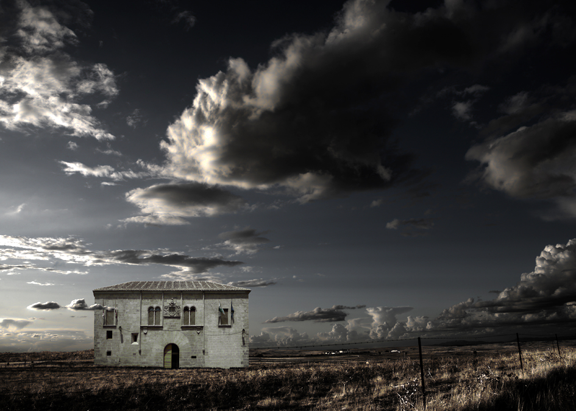

Casitas de Extremadura es una exposición fotográfica dedicada a paisajes de Extremadura. A partir del 10 de Septiembre.
Pepe Higuero es un hombre del renacimiento. Director en varios medios de comunicación , DJ en clubes históricos de la capital cacereña, coleccionista de vinilos, actor, fotógrafo.
En 2009, nos sorprende como comendador de Alcuéscar en su papel de coordinador del voluntariado de Cáceres Evocado, ese proyecto de la Consejería de Cultura y Turismo que por segundo año consecutivo ha convertido Cáceres en una recreación histórica de la España barroca.
Como fotógrafo, destaca en fotografía social, el seguimiento de acontecimientos extraordinarios y los reportajes de ciudades o países. Ha realizado exposiciones sobre las ciudades de Londres, San José, La Habana, Cuzco, Lima, Cáceres o Leningrado. Y de espacios naturales como Las Hurdes o Machu-Pichu.
Con este CV, el lugar escogido en Bruselas no podía ser más adecuado para acoger a este gran viajero de ciudades, disciplinas y conceptos.
Las obras de la exposición de Pepe Higuero, CASITAS, corresponden a espacios naturales y paisajes urbanos de Extremadura: cerezos del Jerte, Sierra de Montánchez, Puente de Alcántara, Monfragüe, Trujillo, Cáceres…

Junto a fotografías de concepción tradicional, el autor presenta otras realizadas digitalmente con técnicas de HDR y coloreado. Hay representaciones de la realidad y otras de composición imaginada.

Pepe tiene mucha relación con Bruselas. Su hija Marta lleva varios años establecida en la capital belga. Donde además de trabajar en el departamento financiero de una gran multinacional de textiles, colabora en proyectos musicales en varios grupos locales y pincha discos en varios clubes de la capital belga.

{kind=link}